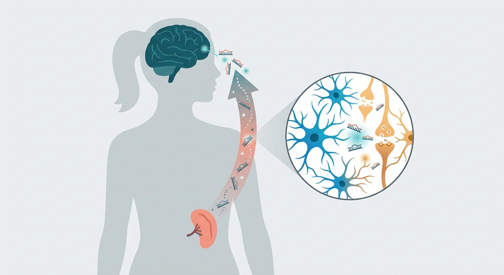

The Spleen’s Whispers: How a Peripheral MicroRNA Dictates Female Brain Aging at Midlife

Women live longer than men on average, yet they bear a disproportionate burden of age-related cognitive decline and Alzheimer’s disease. This vulnerability is not a sudden late-life switch; it begins silently during the midlife transition, a critical window when cellular resilience starts to give way to systemic frailty. For decades, neuroscientists have peered directly into the brain's intricate neural networks to find the source of this divergence. But a groundbreaking study published in Neuron suggests we have been looking in the wrong place. The true culprit behind female-biased cognitive vulnerability may actually reside outside the skull entirely, whispered from the depths of the spleen.
To uncover this periphery-to-brain hotline, the research team mapped an elegant, multi-step molecular relay. It begins in middle age with an epigenetic shift in females: the upregulation of an X-linked RNA-binding protein called RBMX within the spleen. This protein acts as a molecular printer, ramping up the production of a specific microRNA called miR-10a-5p. Released into systemic circulation like a microscopic bottle message, this microRNA travels from the spleen to the brain. Upon crossing the blood-brain barrier, it invades cerebral tissues, delivering a silencing blow to a crucial neuronal protector: a calcium/calmodulin-responsive kinase known as γCaMKII.
Think of γCaMKII as a master spark plug for neuronal energy. When miR-10a-5p represses this kinase, it starves the brain's mitochondria—the cellular power plants. Deprived of energy, brain cells begin to sputter, triggering a cascade of cellular senescence. These "zombie cells" refuse to die, instead secreting inflammatory factors that degrade synaptic plasticity and degrade memory. Remarkably, when researchers deployed a miR-10a-5p inhibitor in mouse models and human neurons derived from Alzheimer's patients, they successfully restored mitochondrial respiration, cleared the markers of cellular senescence, and rescued cognitive deficits, showcasing the massive clinical potential of this axis.
However, translating these exciting results from the laboratory to human patients requires a heavy dose of scientific realism. While the spleen-to-brain axis is clearly defined in mice, human biology is vastly more complex, and the blood-brain barrier remains a notoriously difficult wall for microRNA-targeted therapeutics to scale. Systemically suppressing miR-10a-5p could also trigger unintended side effects, as microRNAs often play diverse, context-dependent roles in other vital organs like the heart or liver. Before biotech investors can realize the massive commercial potential of a "female cognitive shield," researchers must develop highly localized delivery systems and prove in rigorous clinical trials that silencing this splenic signal won't disrupt the body's broader cellular harmony.
Sources & Citations:
Primary Source: A miR-10a-5p-γCaMKII axis links periphery-to-brain signaling to cognitive vulnerability during female midlife. (Neuron)
- Primary Source: "A miR-10a-5p-γCaMKII axis links periphery-to-brain signaling to cognitive vulnerability during female midlife." Neuron (2026). DOI: 10.1016/j.neuron.2026.08.022